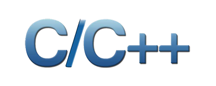
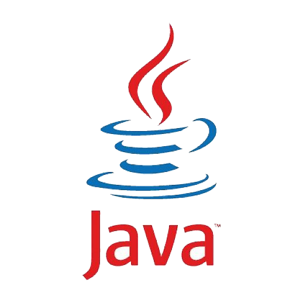
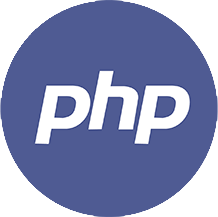
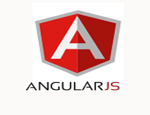

C/C++

C/C++ is the base of all programming language. Anyone who wants to make his/her career as a software developer they must have to clear the concept of C/C++. It is made to develop a good concept of programming language to students. CODEGEN provides comprehensive training with the help of its highly experienced team. CODEGEN is the best training institute worldwide. if you are looking for training institute for C/C++, C/C++ training institute , best training institute for C/C++. So, CODEGEN is the best place.
Outline of Course
PROGRAMMING IN C
- UNIT 1: THE BASICS OF C
- UNIT 2: DATA TYPE UNIT 3: C OPERATORS
- UNIT 4: CONTROL STRUCTURES
- UNIT 5: LOOPS UNIT 6: FUNCTION
- UNIT 6: FUNCTION
- UNIT 7: STORING VARIABLES
- UNIT 8: ARRAYS AND POINTERS
- UNIT 9: C PREPROCESSORS
- UNIT 10: STRUCTURES AND UNION
- UNIT 11: FILES HANDLING
- UNIT 12: STANDARD LIBRARY FUNCTIONS
- UNIT 13: STRINGS
PROGRAMMING IN C++
- UNIT 1 INTRODUCTION TO C++
- UNIT 2: CLASSES AND OBJECTS
- UNIT 3 INHERITANCES
- UNIT 4 POLYMORPHISM
- UNIT 5 GENERIC FUNCTIONS
- UNIT 6 STREAMS AND FILES
- UNIT 7 NAMESPACE, EXCEPTION HANDLING & STL
Certifications
You can get certifications and Training certificate along with project letter from DOEACC and CODEGEN on successful completion of the program. Certifications put you on the path to career enhancement and greater success in your chosen profession. Take advantage of a full suite of progressive benefits while increasing your knowledge, effectiveness and marketability.
Java

Overviews
Throughout the course,hands-on exercises (both classroom & Lab Assignment) are designed to teach object oriented programming using the Java Standard Edition programming language (JSE 8)
Course Objective
Learn the syntax, semantics and idioms of the Java programming language. Gain confidence in object-oriented programming principles through lots of practical exercises that provide useful exposure to the core Java class libraries.
Certifications
For CORE JAVA You will get Training certificate and Project letter from DOEACC and CODEGEN on successful completion of the program. It put you on the path to career enhancement and greater success in your chosen profession. Take advantage of a full suite of progressive benefits while increasing your knowledge, effectiveness and marketability.
Python

Overview:
Python has been one of the premier, flexible, and powerful open-source language that is easy to learn, easy to use, and has powerful libraries for data manipulation and analysis. Python is a clear and powerful object-oriented programming language, comparable to Perl, Ruby, Scheme, or Java.
For over a decade, Python has been used in scientific computing and highly quantitative domains such as finance, oil and gas, physics, and signal processing. This Python Course will cover both basic and advance concepts of Python like writing python scripts, sequence and file operations in python, Machine Learning in Python. You will also go through important and most widely used packages like pandas, scikit, numpy scipy etc
Course Objective:
Python can be easy to pick up whether you’re a first time programmer or you’re experienced with other languages.
After the completion of Python Certification Course, you should be able to:
- Master the Basic and Advanced Concepts of Python
- Uses an elegant syntax, making the programs you write easier to read. Is an easy-to-use language that makes it simple to get your program working. This makes Python ideal for prototype development and other ad-hoc programming tasks, without compromising maintainability.
- Gain expertise in machine learning using Python and build a Real Life Machine Learning application using modules in Python
- Understand the supervised and unsupervised learning and concepts of Scikit-Learn
- Analysing, cleaning, modelling data and organizing the result of the analysis into a form which suitable for plotting and tabular display.
Certifications
For PYTHON You will get Training certificate and Project letter from CODEGEN on successful completion of the program. It put you on the path to career enhancement and greater success in your chosen profession. Take advantage of a full suite of progressive benefits while increasing your knowledge, effectiveness and marketability.
PHP

Overview :
PHP allow web developers to write dynamically generated pages quickly. PHP is open source code which is free to download and use and supports many databases like MySQL, Informix, Oracle, Sybase, Solid, PostgreSQL, Generic ODBC etc.
Course Objective
PHP programming provides knowledge to develop any kind of dynamic website like e-commerce portal. Our PHP Programming course gives the information important to plan and create dynamic, database-driven website pages. PHP is a dialect composed for the web, snappy to learn, simple to convey and gives considerable usefulness required to web based business. PHP course presents the PHP structure and punctuation, and covers inside and out the most imperative methods which are utilized to construct dynamic sites. We are the best PHP training institute, offers proficient PHP course with venture. CODEGEN is one of the best training institute for PHP . We provide comprehensive training with live project. We provide globally recognized certificate from IADL-UK and USDLA (USA). We also provide placement assistance for our candidate.
- UNIT 1: BASIC SYNTAX AND PROGRAMMING WITH PHP
- UNIT 2: PHP WITH WEB DESIGN
- UNIT 3: INTRODUCING ARRAY
- UNIT 4: USE OF PHP FUNCTION, PHP FORMS AND USER INPUT
- UNIT 5: INTERACTING WITH THE FILE SYSTEM AND THE SERVER
- UNIT 6: STRING MANIPULATION AND REGULAR EXPRESSION
- UNIT 7: REUSING CODE AND WRITING FUNCTIONS
- UNIT 8: SESSION AND COOKIE
Certifications
For PHP You will get Training certificate and Project letter from CODEGEN on successful completion of the program. It put you on the path to career enhancement and greater success in your chosen profession. Take advantage of a full suite of progressive benefits while increasing your knowledge, effectiveness and marketability.
C#

Overview
This developer training course covers C#, Microsoft’s managed C-style language for the .NET Framework. Specifically, this C# programming course can help you prepare for Exam 70-483, a key component of the MCSD: Windows Store Apps certification. Microsoft Technical Evangelist Jerry Nixon and the co-founder of Crank211, Daren May, provide sample after sample to show simple and complex techniques that you as a C# developer can take back to your workplace. This C# online tutorial is engaging and demo rich, and it is tailored for intermediary to seasoned developers looking to bulk up on C# or for a refresher on core concepts and features.
Course Objective
- Object Oriented Programming, Managed Languages and C#
- Constructing Complex Types- Object Interfaces and Inheritance
- Advanced C#, Type and Value Validation- Encryption Techniques
- Splitting Assemblies and WinMD- Diagnostics and Instrumentation
- Using LINQ to Objects and XML- Fundamentals of Serialization Recommended Resources & Next Steps for C#
- Interacting with the File System- Leveraging Web Services
- Controlling Programmatic Flow- Manipulating Types and Strings
- Code Reflection and Information- Working with Garbage Collection
Certifications
For C# You will get Training certificate and Project letter from CODEGEN AS WELL AS MICROSOFT on successful completion of the program. It put you on the path to career enhancement and greater success in your chosen profession. Take advantage of a full suite of progressive benefits while increasing your knowledge, effectiveness and marketability.
XML

Overview
Extensible Markup Language (XML) was designed to make information sharing and data interpretation easier. Having a solid grasp of what XML is and how to work with it is essential for any developer. In this course, Joe Marini takes you through the basic rules of XML, explains its syntax, and covers more advanced topics such as styling your XML with CSS and manipulating XML content using XPath and XSLT. From integrating XML into your site to using document type definitions and XML schema, this course covers what you need to know to not only get started with XML, but also master it.
Course Objective
- What is XML?
- Advantages and drawbacks of XML
- Proper XML syntax
- Working with XML namespaces
- Styling XML tags
- Discovering and creating document content
- Manipulating XML content using XPath and XSLT
- Document type definitions and XML schema
Certifications
For XML You will get Training certificate and Project letter from CODEGEN on successful completion of the program. It put you on the path to career enhancement and greater success in your chosen profession. Take advantage of a full suite of progressive benefits while increasing your knowledge, effectiveness and marketability.
Angular JS

Overview
AngularJS 4 Training provides you the skills needed to create dynamic web applications. You will learn about the concepts of AngularJS 4, JavaScript, MVC Framework. This Training covers various AngularJS 4 module in third party, controllers, routes, filters, Node.js, Dependency Injection and Integration with MVC. It includes features of data binding and dependency injection to reduce coding efforts.
Course Objective
- Understand importance of AngularJS 4 and key features
- Learn about the AngularJS 4 Library, JavaScript and MVC framework
- Create Controllers and share data between Controllers
- Dependency Injection concepts
- Learn Custom Directives, Filters and overview of Creating Routes
- Description of AngularJS 4 modules
- Yeoman/generator-node, Node.js and Rest Exposure
- Deploy Validations and Business Logic in Controllers
- Integrating AngularJS 4 with MVC
- Work on real-time AngularJS 4 applications
Certifications
For AngularJS You will get Training certificate and Project letter from CODEGEN on successful completion of the program. It put you on the path to career enhancement and greater success in your chosen profession. Take advantage of a full suite of progressive benefits while increasing your knowledge, effectiveness and marketability.
Backbone JS

Overview
Backbone.js is the key to keeping your JavaScript code neat, and separating your markup from the data powering your web applications. Although it has fantastic server-side capabilities, this course focuses on the most relevant features for front-end developers and web designers that want to learn how to build out their web pages and keep their code organized, move away from the DOM, and use Backbone's useful JavaScript library. Start here and learn how to use models and collections to manage your data, and display it on your web page with views. Then use events and routers to create navigational logic in your web app. Author shows you just what you need to get up and running with Backbone.js and get the job done.
Course Objective
- What is Backbone.js?
- Understanding how MVC libraries work
- Adding properties to a model
- Creating a collection of models
- Adding properties to a model view
- Loading model data on a web page
- Configuring routes
- Finding Backbone resources
Certifications
For Backbonejs You will get Training certificate and Project letter from CODEGEN on successful completion of the program. It put you on the path to career enhancement and greater success in your chosen profession. Take advantage of a full suite of progressive benefits while increasing your knowledge, effectiveness and marketability.